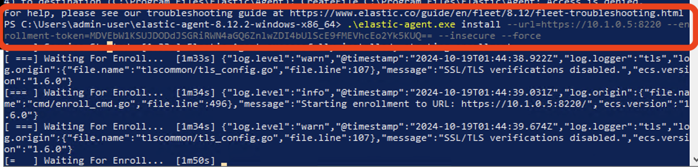

Elastic Agent Management - Enrollment Guide
This guide will walk you through the process of enrolling an Elastic agent.
Steps to Enroll an Agent
-
Access the Fleet Menu
- Open the LME dashboard:
https://{SERVER_IP}- Password information can be found in the README.
- Open the "hamburger" menu icon in the top left (three horizontal lines)
- Scroll down and select "Fleet" from the menu
- Open the LME dashboard:
-
Add a New Agent
- Click on the "Add agent" button
-
Select the Policy
- Ensure you select the appropriate policy for the agent
- For example, choose "Endpoint Policy" if you're adding an endpoint device
-
Enrollment Settings
- Keep the "Enroll in Fleet" option selected
-
Choose the Agent Type
- Select the appropriate option based on your endpoint:
- Linux Tar
- Mac
- Windows (ensure you run this in a PowerShell prompt with administrator privileges)
- Select the appropriate option based on your endpoint:
-
Installation Command
- You will be presented with an installation command for the selected platform
- Note: If you haven't added the LME certificates to your trusted store, you'll need to modify the command
-
Modify the Command If necessary(e.g.,if certificates have not been added to the trusted store)
- Add
--insecureat the end of the ./elastic-agent install` command - This is similar to clicking "continue to website" in a browser when you get a certificate warning
-
Example:
./elastic-agent install [-other-flags-youll-see] --insecure -
it should look like this screenshot: 
- Add
-
Execute the Command
- Run the command on the desired host.
- Recommend running each line individually so you can see a clear picture of the status of each command ran. The entire process will download an agent, unzip it, and install it.
- Run the command on the desired host.
From Fleet you should see the agent enrolled now.
LME Elastic Agent Integration Example
This guide will walk you through the process of adding a Windows integration to an agent policy in the LME system.
Steps to Add Windows Integration
-
Access Fleet and Agent Policies
- Open the LME dashboard:
https://{SERVER_IP}- Password information can be found in the Readme.
- Open the "hamburger" menu icon in the top left (three horizontal lines)
- Select "Fleet" from the menu
- Click on "Agent policies"
- Open the LME dashboard:
-
Select the Target Policy
- Choose the policy you want to add the integration to
- For example, select "Endpoint Policy"
-
Add Integration
- Click the "Add integration" button
-
Choose Windows Integration
- From the list of available integrations, select "Windows"
- Select "add Windows"
-
Configure Windows Integration
- Scroll down to review the options available
- You'll see various Windows logs and metrics that can be collected
-
Customize Log Collection
- Review the options set to on or off
- These options provide more choices for collecting Windows logs
- Important note: If you have Sysmon installed on your endpoints, ensure "Sysmon Operational" is selected to collect Sysmon logs
-
Configure Metrics Collection
- You can choose to collect various metrics from your Windows endpoints
- Review and enable the metrics you're interested in monitoring
-
Save and Deploy
- After configuring your desired options, save the integration
- Deploy the changes to apply them to the agents using this policy
Important Considerations
- Sysmon Integration: If you're using Sysmon for enhanced logging, make sure to enable the Sysmon Operational log collection.
- Performance Impact: Be mindful that collecting more logs and metrics may impact endpoint performance. Balance your monitoring needs with system resources.
- Regulatory Compliance: Consider any regulatory requirements you may have when selecting which logs and metrics to collect.
- Storage Considerations: More data collection means more storage usage. Ensure your LME system has adequate storage capacity.
- Review Regularly: Periodically review your integration settings to ensure they still meet your needs and adjust as necessary.
By following these steps, you can effectively add and configure the Windows integration to your chosen agent policy in the LME system, allowing for comprehensive logging of your Windows endpoints.
Apply these same steps to future integrations such as Auditd for Linux.
Troubleshooting Agent Setup:
The Elastic agent has multiple debugging commands that can be run to troubleshoot installs. Please see the link HERE.
In addition, you can use this link to navigate/find the directories for where Elastic agent is installed on the operating system.
If there are issues with running the command involving a pipe file, the elastic endpoint service (a windows service started by the agent) is in a failed state, and retarting the machine will most likely fix it, check out this link However, this isn't required if the agent is showing as healthy, only if you want to run other cli agent debugging commands.